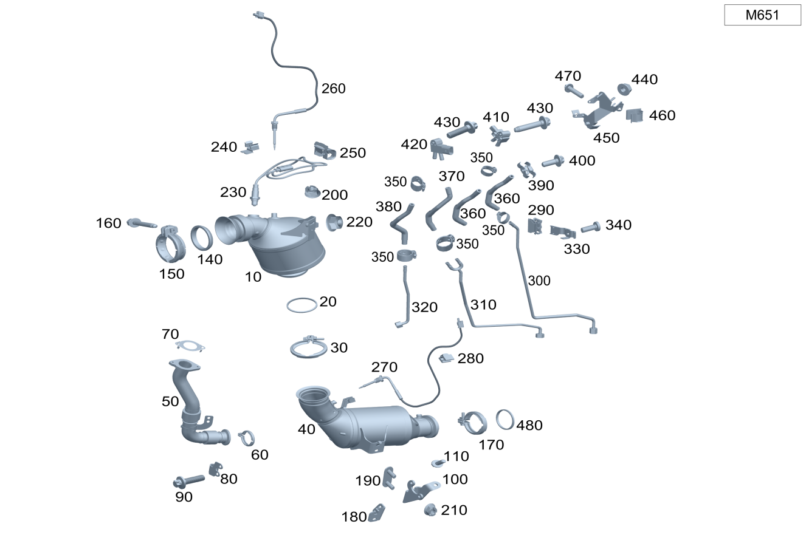

| № | Артикул | Название | Кол. | Примечание | Ограничение |
|---|---|---|---|---|---|
| 10 | A 205 490 93 14 | Система катализатора (CATALYTIC CONVERT. SYSTEM) | 1 | Рулевое управление: Влево [697] ДЕТАЛЬ ПОСТАВЛЯЕТСЯ ТОЛЬКО/ИЛИ ТАКЖЕ КАК ЗАП.ЧАСТЬ | M651 |
| 10 | A 205 490 94 14 | Система катализатора (CATALYTIC CONVERT. SYSTEM) | 1 | Рулевое управление: Вправо [697] ДЕТАЛЬ ПОСТАВЛЯЕТСЯ ТОЛЬКО/ИЛИ ТАКЖЕ КАК ЗАП.ЧАСТЬ | M651 |
| 10 | A 205 490 05 36 | Система катализатора (CATALYTIC CONVERT. SYSTEM) | 1 | [697] ДЕТАЛЬ ПОСТАВЛЯЕТСЯ ТОЛЬКО/ИЛИ ТАКЖЕ КАК ЗАП.ЧАСТЬ | (M651+(460/494))+-926 |
| 10 | A 253 490 00 14 | Система катализатора (CATALYTIC CONVERT. SYSTEM) | 1 | Рулевое управление: Влево [697] ДЕТАЛЬ ПОСТАВЛЯЕТСЯ ТОЛЬКО/ИЛИ ТАКЖЕ КАК ЗАП.ЧАСТЬ | M651+926 |
| 10 | A 253 490 02 14 | Система катализатора (CATALYTIC CONVERT. SYSTEM) | 1 | Рулевое управление: Вправо [697] ДЕТАЛЬ ПОСТАВЛЯЕТСЯ ТОЛЬКО/ИЛИ ТАКЖЕ КАК ЗАП.ЧАСТЬ | M651+926 |
| 20 | A 000 492 08 81 | Уплотнительное кольцо (SEALING RING) | 1 | Катализатор к сажевому фильтру | M651 |
| 30 | A 002 995 47 02 | Трубн. хомут сист.вып. ОГ (PIPE CLAMP, EXHAUST SYS.) | 1 | Катализатор к сажевому фильтру | M651 |
| 40 | A 205 490 18 92 | Система сажевого фильтра (DIESEL FILTER SYSTEM) | 1 | Рулевое управление: Влево [697] ДЕТАЛЬ ПОСТАВЛЯЕТСЯ ТОЛЬКО/ИЛИ ТАКЖЕ КАК ЗАП.ЧАСТЬ | M651 |
| 40 | A 205 490 32 92 | Система сажевого фильтра (DIESEL FILTER SYSTEM) | 1 | Рулевое управление: Вправо [697] ДЕТАЛЬ ПОСТАВЛЯЕТСЯ ТОЛЬКО/ИЛИ ТАКЖЕ КАК ЗАП.ЧАСТЬ | M651 |
| 40 | A 205 490 29 92 | Система сажевого фильтра (DIESEL FILTER SYSTEM) | 1 | [697] ДЕТАЛЬ ПОСТАВЛЯЕТСЯ ТОЛЬКО/ИЛИ ТАКЖЕ КАК ЗАП.ЧАСТЬ | (M651+(460/494))+-926 |
| 40 | A 253 490 01 14 | Система катализатора (CATALYTIC CONVERT. SYSTEM) | 1 | Рулевое управление: Влево [697] ДЕТАЛЬ ПОСТАВЛЯЕТСЯ ТОЛЬКО/ИЛИ ТАКЖЕ КАК ЗАП.ЧАСТЬ | M651+926 |
| 40 | A 253 490 12 00 | Система катализатора (CATALYTIC CONVERT. SYSTEM) | 1 | Рулевое управление: Вправо [697] ДЕТАЛЬ ПОСТАВЛЯЕТСЯ ТОЛЬКО/ИЛИ ТАКЖЕ КАК ЗАП.ЧАСТЬ | M651+926 |
| 50 | A 651 140 27 08 | Труб. рецирк. ОГ (EXHAUST GAS RECIRC. LINE) | 1 | К трубопроводу ОГ | M651+(460/494) |
| 50 | A 651 140 27 08 | Труб. рецирк. ОГ (EXHAUST GAS RECIRC. LINE) | 1 | К трубопроводу ОГ | (M651+(460/494))+-926 |
| 60 | A 000 995 09 33 | Профильный хомут цельный (PROFILE CLAMP, ONE-PIECE) | 1 | Трубопровод рециркуляции ОГ к выпускной системе | (M651+(460/494))+-926 |
| 70 | A 651 142 14 80 | Металлическое уплотнение (METAL SEAL WITH BEAD) | 1 | Трубопровод рециркуляции ОГ | M651+(460/494) |
| 80 | A 205 492 11 41 | Держатель (HOLDER) | 1 | К трубопроводу рециркуляции ОГ | (M651+(460/494))+-926 |
| 90 | N 910143 006001 | Винт с 6-гр. глвк (HEXALOBULAR SCREW) | 2 | Держатель к трубопроводу рециркуляции ОГ; M6X16 | (M651+(460/494))+-926 |
| 100 | A 205 492 06 00 | Держатель (HOLDER) | 1 | На картере коробки передач | M651 |
| 110 | N 000000 000276 | Винт с 6-гр. глвк (HEXALOBULAR SCREW) | 1 | Держатель к картеру гидротрансформатора; M8X20 | M651+421 |
| 140 | A 000 492 09 81 | Уплотнительное кольцо (SEALING RING) | 1 | Катализатор к турбонагнетателю | M651 |
| 150 | A 000 995 89 02 | Трубн. хомут сист.вып. ОГ (PIPE CLAMP, EXHAUST SYS.) | 1 | Катализатор к турбонагнетателю | M651 |
| 160 | A 000 990 46 37 | Винт с 6-гр. глвк (HEXALOBULAR SCREW) | 1 | Хомут к турбокомпрессору; M8X40 | M651 |
| 170 | A 002 995 47 02 | Трубн. хомут сист.вып. ОГ (PIPE CLAMP, EXHAUST SYS.) | 1 | Катализатор к выпускной трубе спереди | M642/M651/M654+926 |
| 180 | A 205 492 24 00 | Держатель (HOLDER) | 1 | К сажевому фильтру Рулевое управление: Вправо | M651 |
| 190 | A 221 492 03 18 | Крепежная пластина (MOUNTING PLATE) | 1 | Для держателя к сажевому фильтру | M651 |
| 200 | A 120 142 00 72 | Шестигранная гайка (HEXAGON NUT) | 1 | Катализатор к держателю; M8 | M651 |
| 210 | N 000000 003175 | Гайка (NUT) | 2 | Для держателя к сажевому фильтру; M8 | M651 |
| 220 | A 002 990 64 54 | Гайка шестигранная (HEX. NUT W CLAMPING PART) | 1 | Крепление электрического провода; M6 Рулевое управление: Влево | M651+(460/494) |
| 230 | A 007 542 16 18 | Лямбда-зонд (LAMBDA SENSOR) | 1 | Регулирующий зонд перед катализатором | M651 |
| 240 | A 002 991 27 70 | Скоба (CLAMP) | 1 | Крепление штекера | M651 |
| 250 | A 012 988 14 78 | Крепежная скоба (FASTENING CLIP) | 1 | Провод датчика кислорода на воздушном фильтре | M651 |
| 250 | A 012 988 14 78 | Крепежная скоба (FASTENING CLIP) | 2 | Провод датчика кислорода на воздушном фильтре | M651+(460/494) |
| 260 | A 000 905 89 04 | Датчик температуры (TEMPERATURE SENSOR) | 1 | перед каталитическим нейтрализатором ОГ | M651+U77 |
| 270 | A 000 905 08 05 | Датчик температуры (TEMPERATURE SENSOR) | 1 | Перед сажевым фильтром | M651+U77 |
| 280 | A 000 995 61 90 | Кабельная стяжка (CABLE STRAP) | 1 | Крепление кабеля датчика температуры; 4,6X200 MM Рулевое управление: Влево | (M651+U77)+-(460/494) |
| 290 | A 000 991 02 71 | Скоба (CLAMP) | 1 | Крепление провода датчика температуры; 18X19 MM | M651+U77 |
| 300 | A 205 491 05 37 | Напорный трубопровод (PRESSURE LINE) | 1 | После сажевого фильтра Рулевое управление: Влево | M651+-(926/460/494) |
| 300 | A 205 491 09 37 | Напорный трубопровод (PRESSURE LINE) | 1 | После сажевого фильтра Рулевое управление: Вправо | M651+-926 |
| 310 | A 205 491 11 37 | Напорный трубопровод (PRESSURE LINE) | 1 | После сажевого фильтра Рулевое управление: Влево | M651+(460/494)+-926 |
| 320 | A 205 491 02 37 | Напорный трубопровод (PRESSURE LINE) | 1 | Перед сажевым фильтром Рулевое управление: Влево | M651+-926 |
| 320 | A 205 491 06 37 | Напорный трубопровод (PRESSURE LINE) | 1 | Перед сажевым фильтром Рулевое управление: Вправо | M651+-926 |
| 320 | A 205 491 08 37 | Напорный трубопровод (PRESSURE LINE) | 1 | Перед сажевым фильтром Рулевое управление: Влево | M651+(460/494)+-926 |
| 330 | A 205 492 34 41 | Держатель (HOLDER) | 1 | Крепление напорного трубопровода | M651+-926 |
| 340 | N 000000 001181 | Винт с 6-гр. глвк (HEXALOBULAR SCREW) | 1 | Крепление держателя напорных трубопроводов; M5X16 | M651+-926 |
| 350 | A 003 997 87 90 | Хомут для шланга (HOSE CLAMP) | 4 | 13.5 MM | M651+-926/M642 |
| 350 | A 003 997 87 90 | Хомут для шланга (HOSE CLAMP) | 7 | 13.5 MM | M651+(460/494)+-926 |
| 360 | A 205 492 08 59 | Шланг выпускной системы (EXHAUST GAS HOSE) | 1 | После сажевого фильтра | M651+-926 |
| 360 | A 205 492 09 00 | Шланг выпускной системы (EXHAUST GAS HOSE) | 1 | После сажевого фильтра | (M651+(460/494))+-926 |
| 370 | A 205 492 11 00 | Шланг выпускной системы (EXHAUST GAS HOSE) | 1 | После сажевого фильтра | M651+(460/494) |
| 380 | A 205 492 07 59 | Шланг выпускной системы (EXHAUST GAS HOSE) | 1 | Перед сажевым фильтром | M651+-926 |
| 380 | A 205 492 10 00 | Шланг выпускной системы (EXHAUST GAS HOSE) | 1 | Перед сажевым фильтром | (M651+(460/494))+-926 |
| 390 | A 166 491 09 41 | Держатель (HOLDER) | 1 | Шланг выпускной системы | M651+-926 |
| 400 | N 910143 006000 | Винт с 6-гр. глвк (HEXALOBULAR SCREW) | 1 | Крепление держателя; M6X12 | M651+-926 |
| 400 | N 910143 006002 | Винт с 6-гр. глвк (HEXALOBULAR SCREW) | 1 | Крепление держателя; M6X20 | M651+(460/494)+-926 |
| 410 | A 642 905 04 00 | Датчик давления (PRESSURE SENSOR) | 1 | Сажевый фильтр | ((M642/M651)+474)+-(U41/926) |
| 410 | A 000 905 65 03 | Датчик давления (PRESSURE SENSOR) | 1 | Сажевый фильтр | ((M642/M651)+474)+-(U41/926) |
| 410 | A 642 905 04 00 | Датчик давления (PRESSURE SENSOR) | 1 | Сажевый фильтр | (M651+474+927)+-(U41/926) |
| 420 | A 007 153 60 28 | Датчик давления (PRESSURE SENSOR) | 1 | Система рециркуляции ОГ | M651+474+(460/494) |
| 430 | N 000000 004660 | Винт с 6-гр. глвк (HEXALOBULAR SCREW) | 1 | Крепление дифференциального датчика давления | (M651+474)+-(460/494/9O1) |
| 440 | A 000 990 43 37 | Шестигранная гайка (HEXAGON NUT) | 1 | Крепление дифференциального датчика давления; M6 | M651+474+(460/494)+-(926/U41) |
| 440 | A 000 990 43 37 | Шестигранная гайка (HEXAGON NUT) | 1 | Крепление дифференциального датчика давления; M6 | M651+474+(460/494) |
| 450 | A 651 150 32 73 | Держатель (HOLDER) | 1 | Дифференциальный датчик давления | M651+(494/460) |
| 450 | N 910105 008008 | Винт с 6-гранной головкой (HEXAGON HEAD BOLT) | 2 | Держатель к трубопроводу ОГ; M8X16 | -(M177+M40) |
| 460 | A 012 988 07 78 | - Скоба (CLAMP) | 1 | Крепление жгута электропроводки дифференциального датчика давления | M651+(494/460) |
| 470 | N 910143 006001 | Винт с 6-гр. глвк (HEXALOBULAR SCREW) | 2 | Крепление кронштейна к держателю воздушного фильтра; M6X16 | M651+(494/460) |
| 480 | A 000 492 08 81 | Уплотнительное кольцо (SEALING RING) | 1 | Катализатор к сажевому фильтру | M651 |
| 480 | A 000 492 08 81 | Уплотнительное кольцо (SEALING RING) | 1 | Катализатор к выпускной трубе спереди | M642/M651/M654+926 |
| 500 | A 000 905 27 19 | Датчик NOx (NOX SENSOR) | 1 | перед каталитическим нейтрализатором ОГ | (M651+-926/M642)+O12 |
| 500 | A 000 905 71 24 | Датчик NOx (NOX SENSOR) | 1 | перед каталитическим нейтрализатором ОГ | ((M651+-926)/M642)+-O12 |
| 510 | A 000 546 20 75 | хомут (CLAMP) | 7 | К экрану; 18.0X18.5 MM | M642/M651+-926 |
| 520 | A 000 990 43 37 | Шестигранная гайка (HEXAGON NUT) | 2 | Крепление блока управления датчика оксидов азота; M6 | M642/M651+-926 |
| 530 | A 253 540 98 07 | Электрический жгут (ELECTRICAL WIRING HARNESS) | 1 | Соединение датчика оксидов азота спереди | (M651/M642)+(927/U77)+-9O1 |
| 530 | A 253 540 99 07 | Электрический жгут (ELECTRICAL WIRING HARNESS) | 1 | Соединение датчика оксидов азота спереди | (M651/M642)+(927/U77)+228+-9O1 |
| 540 | A 253 490 40 00 | Трубопровод ОГ пер. (EXHAUST GAS LINE, FRONT) | 1 | M651 | |
| 540 | A 253 490 40 00 | Трубопровод ОГ пер. (EXHAUST GAS LINE, FRONT) | 1 | M651+(809/800)+498 | |
| 540 | A 253 490 39 00 | Трубопровод ОГ пер. (EXHAUST GAS LINE, FRONT) | 1 | [697] ДЕТАЛЬ ПОСТАВЛЯЕТСЯ ТОЛЬКО/ИЛИ ТАКЖЕ КАК ЗАП.ЧАСТЬ | (M651+(460/494))+-926 |
| 540 | A 253 490 43 00 | Трубопровод ОГ пер. (EXHAUST GAS LINE, FRONT) | 1 | M651+926 | |
| 540 | A 253 490 41 00 | Трубопровод ОГ пер. (EXHAUST GAS LINE, FRONT) | 1 | [697] ДЕТАЛЬ ПОСТАВЛЯЕТСЯ ТОЛЬКО/ИЛИ ТАКЖЕ КАК ЗАП.ЧАСТЬ | M651+(809/800) |
| 550 | A 205 492 13 00 | Держатель (HOLDER) | 1 | К лонжерону | M642/M651/M276 |
| 560 | A 205 490 01 00 | Держатель (HOLDER) | 1 | К трубопроводу ОГ | M642/M651/M276 |
| 570 | N 000000 007953 | Винт с 6-гранной головкой (HEXAGON HEAD BOLT) | 2 | Подвеска выпускной системы к заднему мосту; M8X25 | M274/M264/M651/M642/M654/M656 |
| 570 | N 910105 008008 | Винт с 6-гранной головкой (HEXAGON HEAD BOLT) | 2 | Держатель к трубопроводу ОГ; M8X16 | -(M177+M40) |
| 580 | A 253 492 00 00 | Держатель (HOLDER) | 1 | К заднему мосту | (M651/M274/M264) |
| 580 | A 253 492 01 00 | Держатель (HOLDER) | 1 | К заднему мосту | (M651/M274/M264)+5U1 |
| 580 | A 205 492 03 00 | Держатель (HOLDER) | 1 | К заднему мосту | M651+(460/494) |
| 590 | A 000 905 25 19 | Датчик NOx (NOX SENSOR) | 1 | После катализатора | (M651+-926/M642)+O12 |
| 590 | A 000 905 72 24 | Датчик NOx (NOX SENSOR) | 1 | После катализатора | ((M651+-926)/M642)+-O12 |
| 600 | A 000 990 36 62 | Пластмассовая гайка (PLASTIC NUT) | 2 | Крепление блока управления датчика оксидов азота | M642/M651+-926 |
| 610 | A 205 440 01 06 | Электрический жгут (ELECTRICAL WIRING HARNESS) | 1 | Соединение датчика оксидов азота сзади | (M651/M642)+(927/U77)+-9O1 |
| 620 | A 000 905 96 01 | Датчик сажевого фильтра (SOOT PARTICULATE SENSOR) | 1 | Датчик сажи | M651+(460/494) |
| 620 | A 000 905 06 08 | Датчик сажевого фильтра (SOOT PARTICULATE SENSOR) | 1 | Датчик сажи | (M642+927/M651+927+-498)+(808+058/809/800) |
| 620 | A 000 905 56 17 | Датчик сажевого фильтра (SOOT PARTICULATE SENSOR) | 1 | Датчик сажи | M651+O61 |
| 630 | N 910112 006002 | Шестигранная гайка (HEXAGON NUT) | 2 | Крепление блока управления сажевого фильтра; M6 | M651+(809/800)+-498/M642 |
| 640 | A 000 546 20 75 | хомут (CLAMP) | 2 | К экрану; 18.0X18.5 MM | M651+-926 |
| 640 | A 000 546 20 75 | хомут (CLAMP) | 2 | К экрану; 18.0X18.5 MM | (M651+(809/800)+498)+-926 |
| 650 | A 642 151 01 40 | Держатель (HOLDER) | 2 | К экрану | M651+(809/800)+-926/M642 |
| 660 | A 205 440 91 05 | Электрический жгут (ELECTRICAL WIRING HARNESS) | 1 | Разъем датчика сажи | U77+(460/494)+-(498+L) |
| 660 | A 205 440 91 05 | Электрический жгут (ELECTRICAL WIRING HARNESS) | 1 | Разъем датчика сажи | (809+M651+927)+-(498+L) |
| 660 | A 205 440 91 05 | Электрический жгут (ELECTRICAL WIRING HARNESS) | 1 | Разъем датчика сажи | (M651+927)+-(498+L) |
| 670 | A 000 905 87 05 | Датчик температуры (TEMPERATURE SENSOR) | 1 | Перед катализатором SCR | (M642/M651)+U77 |
| 670 | A 000 905 97 05 | Датчик температуры (TEMPERATURE SENSOR) | 1 | Перед катализатором SCR | (M642/M651)+U77 |
| 670 | A 000 905 97 05 | Датчик температуры (TEMPERATURE SENSOR) | 1 | Перед катализатором SCR | (M642/M651)+U77 |
| 690 | A 000 546 20 75 | хомут (CLAMP) | 2 | К экрану катализатора; 18.0X18.5 MM | (M642/M651)+U77 |
| 700 | A 253 492 04 00 | Дроссельная заслонка (THROTTLE VALVE) | 1 | M651+(460/494) | |
| 710 | A 000 906 12 01 | - Регулятор засл.вып.тракт. (EXH. GAS FLAP CONTROLLER) | 1 | Заслонка в выпускном тракте [003932] ПРУЖИНА И КРЕПЁЖНЫЙ БОЛТ ТАКЖЕ ПОДЛЕЖАТ ОБЯЗАТЕЛЬНОЙ ЗАМЕНЕ! | M651+(460/494) |
| 720 | A 000 993 23 35 | - Спиральная пружина (SPIRAL SPRING) | 1 | Управление заслонками | M651+(460/494) |
| 730 | A 000 990 61 37 | - Винт с 6-гр. глвк (HEXALOBULAR SCREW) | 3 | Регулятор дроссельной заслонки к дроссельной заслонке; M6X16 | M651+(460/494) |
| 740 | A 000 995 30 33 | Проф. хомут сист. вып. ОГ (PROFILE CLAMP, EXH. SYS.) | 1 | Выпускная труба к выпускной трубе сзади | M651/M654/M642/M656 |
| 740 | A 000 995 55 33 | Проф. хомут сист. вып. ОГ (PROFILE CLAMP, EXH. SYS.) | 1 | Выпускная труба к выпускной трубе сзади | M274+-700/M651+926/M654+926 |
| 760 | A 253 490 18 21 | Трубка выпуска ОГ (EXHAUST GAS LINE) | 1 | Сзади | M651+-926 |
| 770 | A 253 490 66 00 | Держатель (HOLDER) | 1 | Выпускная труба сзади слева к кузову | (M651/M274/M642/M264/M656) |
| 780 | N 000000 008385 | Винт с 6-гр. глвк (HEXALOBULAR SCREW) | 1 | Крепление кронштейна к кузову; M8X22 | M264/M274/M276/M651+926/M177+M40/M654+926 |
| 790 | N 910105 008008 | Винт с 6-гранной головкой (HEXAGON HEAD BOLT) | 3 | Держатель к продольному несущему элементу; M8X16 | -(M177+M40/M654/M656/M264/M274) |
| 800 | A 231 492 00 44 | Подвес трубопровода ОГ (SUSPENSION, EXH. GAS LINE) | 1 | Сзади | -M177 |
| 810 | A 253 490 19 21 | Трубка выпуска ОГ (EXHAUST GAS LINE) | 1 | Сзади | M651+926 |
| 1530 | A 000 492 08 81 | Уплотнительное кольцо (SEALING RING) | 1 | Катализатор к выпускной трубе спереди | M642/M651/M654+926 |
| 1700 | A 000 995 30 33 | Проф. хомут сист. вып. ОГ (PROFILE CLAMP, EXH. SYS.) | 1 | Выпускная труба к выпускной трубе сзади | M651/M654/M642/M656 |
| 1700 | A 000 995 55 33 | Проф. хомут сист. вып. ОГ (PROFILE CLAMP, EXH. SYS.) | 1 | Выпускная труба к выпускной трубе сзади | M274+-700/M651+926/M654+926 |
| 1780 | A 231 492 00 44 | Подвес трубопровода ОГ (SUSPENSION, EXH. GAS LINE) | 1 | Сзади | -M177 |
| 1790 | A 253 490 66 00 | Держатель (HOLDER) | 1 | Выпускная труба сзади слева к кузову | (M651/M274/M642/M264/M656) |
| 1810 | N 000000 008385 | Винт с 6-гр. глвк (HEXALOBULAR SCREW) | 1 | Крепление кронштейна к кузову; M8X22 |
Позиций: 122 · подписано на схемах: 122 · колесо — плавный зум в курсор, перетаскивание — пан, двойной клик — зум, клик по артикулу — скопировать.